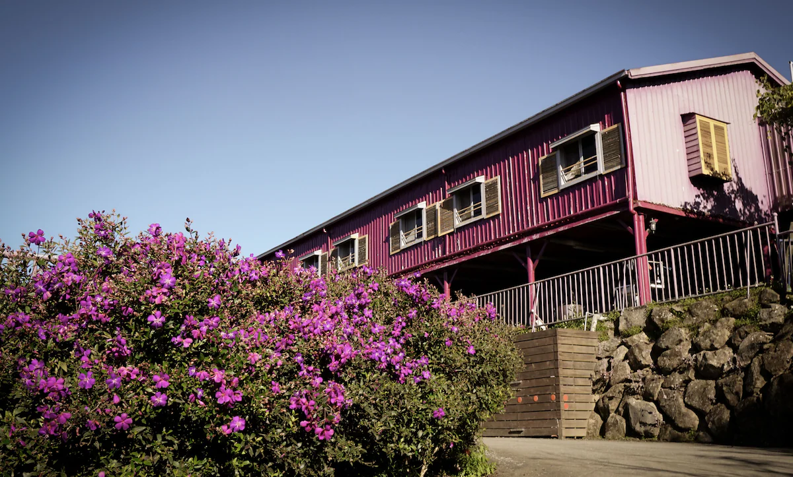

| 阿里山初山/ | |
阿里山初日 |
|
| 入住阿里山初日民宿，開車 15 分鐘內就可以到奮起湖老街。住宿提供免費吃到飽早餐、無線上網和自助停車。此裝飾藝術風格民宿還有附設露台和花園。住過的人都對住宿的友善員工讚不絕口。 |  |
十方山水 |
|
| 位於番路鄉的十方山水 SunSweet House，是尋求自然與寧靜的兩位旅客的完美選擇。鄰近阿里山國家風景區，提供豐富的景觀供探索。在精緻的餐廳享受美食，或在寧靜的花園中放鬆，享受無縫的客房服務。客房設有私人陽台或露台，可欣賞壯麗的花園或山景。現代化的設施如冰箱、淋浴和免費盥洗用品確保舒適的住宿體驗。在十方山水 SunSweet House體驗寧靜與舒適，享受清新的假期。 | .jpg) |